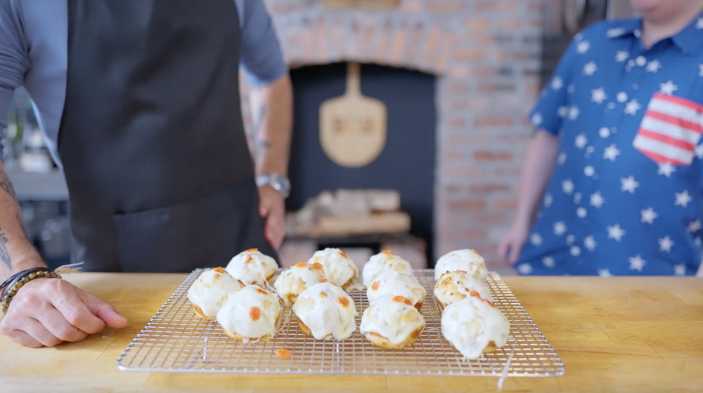

Pizza Poppa's Pizza Balls
Description
In Doctor Strange in the Multiverse of Madness, America Chavez and Doctor Strange travel multiversally to the New York City of Earth-838 and walk by Pizza Poppa, a street food vendor, when America steals a pizza ball.
Fun fact: Pizza Poppa is played by actor Bruce Campbell, known for portraying Ash Williams in Sam Raimi's Evil Dead franchise, who already had three cameo appearances in Sam Raimi's Spider-Man trilogy.
But enough chit-chat. Here's the recipe to make your own pizza balls!

Ingredients
For the Pizza Dough:
- 500g flour
- 25g sugar
- 10g kosher salt
- 2 teaspoons instant dry yeast
- 300g water
- 1 Tbsp olive oil
For the Pizza Sauce:
- 2 cans chopped San Marzano tomatoes
- 1 Tbsp olive oil
- 2 garlic cloves, minced
- 1 tsp kosher salt
- basil and oregano
For the Pizza Balls:
- Pizza Dough (see recipe above)
- Pizza Sauce (see recipe above)
- 200g mozzarella cheese, grated
- 150g pepperoni
Steps
For the Pizza Dough:
- Combine the flour, sugar, salt, and yeast. Add water and oil
- Knead the dough until it cohesively comes together in a very soft and smooth mass
- Form it into a ball then cover and let rise overnight
For the Pizza Sauce:
- Heat the oil in a medium pot
- Add the garlic and cook until fragrant
- Add the tomatoes, salt, basil and oregano
- Continue cooking for 10-15 minutes or until thickened
For the Pizza Balls:
- Divide the dough into 65g pieces, then shape the dough into balls
- Allow them to proof at room temperature for 30-45 minutes
- Shape the balls into logs about 8 inches long and tie each log into a knot
- Preheat the oven to 400 °F
- Carefully inject the knots with the Pizza Sauce, top with cheese and pepperoni
- Bake until they are cooked through and the cheese has fully melted
Original recipe and photo from Binging With Babish